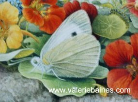
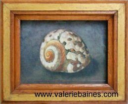
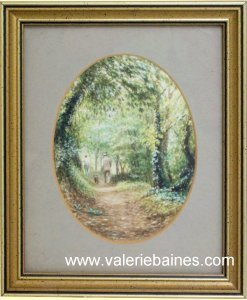
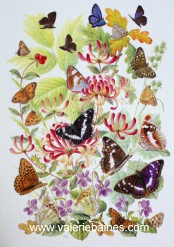
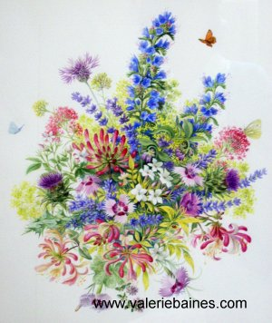
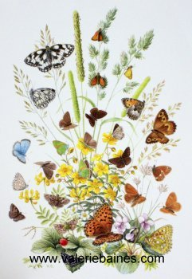

|
About Valerie
| Valerie Baines
Fellow of the Linnean Society of London
Founder member and past Vice President of the Society of Botanical Artists
|
 |
Valerie Baines has drawn and painted as long as she can remember and has always had an interest in the wild-life around her. As a school-child she reared butterflies (especially cabbage whites, because she didn't like cabbage) and kept various pets, who were models for drawings and paintings. She now lives in Sussex, and finds much inspiration in the countryside around.
She went to Harrow Art School, and the Royal College of Music, and then became a designer in the studio at Sandersons, where an aptitude for design and flower painting is essential. On leaving Sandersons she continued free-lance designing and illustration.
|
 |
 |
 |
|
Shell
exhibited at Royal Academy |
|
Guernsey Walk
exhibited at Royal Academy |
Valerie's paintings have been exhibited at the Royal Academy, the Royal Society of Miniature Painters, the Royal Horticultural Society, the Linnean Society, the Museum of Garden History, and annually with the Society of Botanical Artists among other venues in England; the Hunt Institute of Botanical Painting at the Carnegie Mellon University, U.S.A, the Botanical Gardens of the Memorial University, Newfoundland, Canada, and at Le Jardin des Cinq Sens, Yvoire, France.
|
 |
|
 |
|
 |
|
Woodland Butterflies | |
Iden Croft Flowers | |
Grassland Butterflies |
She has illustrated over ten books concerned with Natural History, including "The Naturalist's Garden" and "The Story of Silk" by John Feltwell, "Glorious Butterflies" for Butterfly Conservation and "Mindful of Butterflies" by Bernard Jackson, butterflies becoming something of a speciality. She has written articles for magazines on drawing and painting in watercolour, and gardening for butterflies, and tutors courses on painting at Pashley Manor, Ticehurst, Sussex and Juniper Hall Field Centre, Dorking, Surrey, where there is the butterfly garden full of nectar and larval food plants that she has designed for the Surrey and S.W. London branch of Butterfly Conservation.
Among many commissions and paintings in
collections world-wide are oil and water-colour paintings of flowers,
gardens, houses, interiors, cats, butterflies, and fourteen gorilla
portraits for John Aspinall,(some on show at Port Lympne, Kent.)
Publications
| “Flower Studies in Coloured Pencil” | "The Artist" magazine U.K. | December 2018 |
| “Wadhurst Sketchbook” | Hucksters | 2018 |
“Botanical Painting with the Society of Botanical Artists”
Margaret Stevens
“Cereus (Queen of the Night) page 67 | Batsford | 2018 |
| “Classic Botanicals Secrets of Observational Drawing” | Rockport U.S.A., Canada, U.K. | 2017 |
| “Guernsey Sketchbook” | Book Guild | 2011 |
"The Botanical Palette" In association with The Society of Botanical Artists.
Margaret Stevens. PSBA
Step by step guide to painting a Columbine.(Aquilegia)
Pages 68 to 72. | Collins | 2007 |
"The Art of Botanical Painting" In association with The Society of Botanical Artists.
Margaret Stevens. VPSBA
Nasturtiums. (Tropaeolum majus) Page 129 | Collins | 2004 |
"Arte y Botanica"
Seleccione de Illustraciones de The Society of Botanical Artists.
Plate 27 Helleborus purpurascens.
Plate 29 Tulipan Papagayo Rojo - Red Parrot Tulip
| Caja Madrid y Lunwerg Editores | 2001 |
| "Gardens and Butterflies" 12 paintings for a calendar. | Butterfly Conservation Society. | 1998 |
| Appeared on T.V. in "Carlton Country", painting in the gardens at Iden Croft, Staplehurst, Kent. (video) | | 1997 |
| Article on drawing technique; "Without Trace" | "The Artist" magazine U.K. | July 1997 |
| Biographical entry | "Who's Who in Art" | 1995 et seq. |
| "Glorious Butterflies": 8 paintings of butterflies & related plants | Butterfly Conservation Society. | 1993 |
| "Meadows" John Feltwell FLS. | Allan Sutton UK & USA | 1992 |
| "The Big Book": Woodland & African savanna scene | Collins UK | 1991 |
A series of Natural History books for schools:
(i) Butterflies (ii) Beekeeping (iii) Slugs, Snails and Earthworms (iv) Recycling
John Feltwell FLS. | Learning Through Landscape Trust | 1991-2 |
| "The Story of Silk" John Feltwell FLS. | Allan Sutton UK | 1990 |
| Botanical Diary | St. Michael UK | 1989 |
| "The Naturalist's Garden" John Feltwell FLS. | Ebury Press UK
Salem House USA
McGraw Hill Canada | 1987
1987
1987 |
| "The Natural History of Butterflies" John Feltwell FLS. | Croom Helm UK | 1986 |
| Biographical article | "The Artist" magazine U.K. | November 1983 |
©2008, ©2009, ©2010, ©2011 Valerie Baines |

|